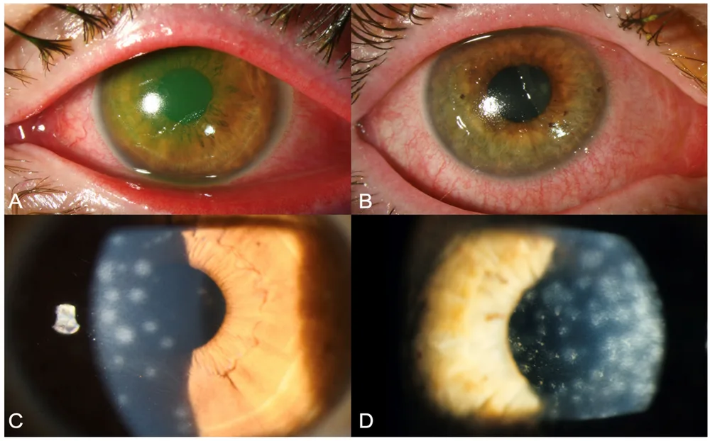

Yeux douloureux, rouges ou prurigineux ; écoulement oculaire — S1.17
Ce diagnostic occupe le premier rang de fréquence de la Phase A de l’œil rouge et ne porte aucun rang d’exclusion urgente.
DX.1 — Conjonctivite virale non herpétique
La conjonctivite virale non herpétique guérit seule mais se transmet très facilementS1S3. Le médecin de famille la soulage, limite la contagion et repère les signes qui imposent l’ophtalmologueS1. Les Hôpitaux universitaires de Genève (HUG) réservent les corticoïdes topiques au spécialiste, car ils sont contre-indiqués dans l’infection viraleS1. Les doses des larmes artificielles proviennent de l’information professionnelle suisse (AIPS) publiée par SwissmedicAIPS 53674AIPS 48624.
1. Définition
La conjonctivite virale non herpétique est une inflammation aiguë de la conjonctive, due surtout à l’adénovirus, qui rougit l’œil et le fait larmoyerS3S1.
2. Épidémiologie (Suisse, puis Europe)
Les HUG chiffrent l’œil rouge à 2 à 3 % des motifs de consultation en médecine de premier recours, et la conjonctivite aiguë y domine les infections oculairesS1. Chez l’adulte, l’origine virale explique environ 80 % des conjonctivites infectieuses, alors que l’enfant présente surtout une forme bactérienneS1. Une cohorte zurichoise de 13 ans montre que l’infection confirmée touche surtout l’adulte de 30 à 49 ans et culmine en automneS2. Les chiffres suisses puis européens et le profil des patients confirmés à Zurich précisent ce rang.
L’adénovirus est un virus à ADN (acide désoxyribonucléique) sans enveloppe ; cette absence le rend peu sensible aux désinfectants alcooliques et explique sa forte contagiositéS2. Il se transmet surtout par contact direct avec les sécrétions oculaires ou par des objets contaminés, et plus rarement par des gouttelettes respiratoiresS2. Après une incubation de 5 à 12 jours, la maladie évolue souvent en deux phases, conjonctivale puis cornéenneS2. La cascade en deux phases et la carte des sérotypes et des complications expliquent les signes et leur calendrier.
Le médecin vérifie d’abord l’absence de drapeau rouge, puis il cherche les arguments viraux et écarte l’herpès, la gonococcie et la chlamydioseS1. Aucun signe isolé ne sépare une conjonctivite virale d’une conjonctivite bactérienne ; le diagnostic repose donc sur un faisceau cliniqueS1. La démarche en six étapes fixe l’ordre des questions et la décision attachée à chacune.
L’anamnèse recherche un contage, une infection récente des voies respiratoires supérieures et un début unilatéral suivi du second œil en 2 à 3 joursS1. Elle précise la douleur, la vision et la photophobie, car ces trois symptômes séparent une conjonctivite simple d’une atteinte cornéenne ou intraoculaireS1. Le patient diabétique peut ne ressentir aucune douleur, si bien que l’absence de douleur ne rassure pas chez luiS1. Les questions ciblées, la chronologie attendue et les drapeaux rouges avec leur conduite structurent l’entretien.
L’examen reste comparatif et systématique : inspection des deux yeux, éversion des paupières, analyse des sécrétions et examen neurologique avec réflexe pupillaire et champ visuelS1. Sans lampe à fente, il reste limité, et la palpation des globes ne sert pas à estimer le tonus, car elle manque de fiabilitéS1. Chaque région figure dans sa fenêtre : état, vision, paupières, conjonctive, cornée, ganglions et voies aériennes hautes.
Kératoconjonctivite adénovirale confirmée à Zurich
L’équipe ophtalmologique de l’hôpital universitaire de Zurich a publié ces photographies en couleurs sous licence CC BY 4.0S2.

Le lecteur recherche d’abord sur le cliché brut la tache verte cornéenne, puis la rougeur des paupières et les petites taches blanches de la cornée.
Lecture guidée.
Le repère 1 montre une érosion cornéenne qui retient la fluorescéine en vert sur une cornée à l’épithélium rugueuxS2.
Le repère 2 montre l’inflammation de la paupière et de la conjonctive palpébrale, rouge et gonfléeS2.
Le repère 3 montre une hyperhémie conjonctivale bulbaire diffuse, faite de vaisseaux dilatés sans prédominance autour du limbeS2.
Le repère 4 montre un infiltrat sous-épithélial arrondi, ou nummule, réaction immunitaire tardive de la cornéeS2.
Ce que l’image décide. Une prise de fluorescéine ou des nummules signent une atteinte cornéenne ; le médecin de famille adresse alors le patient à l’ophtalmologueS1S2.
Image : Jacobi M et al., Microorganisms 2026, figure 1, CC BY 4.0, doi:10.3390/microorganisms14102397, consultée le 13.11.2026. Copie annotée : œuvre dérivée sous la même licence.
Le syndrome de l’œil rouge sans douleur intense ni baisse de vision rassemble des causes palpébrales et conjonctivales, que les HUG classent par structure anatomiqueS1. Le tableau comparatif des conjonctivites place la forme virale face aux formes bactérienne, allergique, herpétique et sexuellement transmise. Les diagnostics à ne pas manquer rappellent les urgences qui peuvent se déguiser en conjonctivite.
Tanalai a photographié cet œil en couleurs et le publie sous licence CC BY 3.0 ; il sert ici de contre-exemple bactérienS5.
Le lecteur recherche d’abord sur le cliché brut la conjonctive rouge, puis le dépôt jaunâtre accroché aux cils inférieurs.
Lecture guidée.
Le repère 1 montre une hyperhémie bulbaire diffuse, présente aussi bien dans la forme virale que bactérienneS5S1.
Le repère 2 montre des sécrétions jaunâtres au bord ciliaire inférieur, plus fréquentes dans une conjonctivite bactérienneS5S1.
Le repère 3 montre une cornée claire, ce qui rend une atteinte cornéenne visible peu probableS5S1.
Ce que l’image décide. Des sécrétions purulentes font reconsidérer l’hypothèse virale ; une hyperpurulence fait chercher un gonocoque par PCRS1.
Image : Tanalai, CC BY 3.0, Wikimedia Commons, File:Swollen eye with conjunctivitis.jpg, consultée le 13.11.2026. Copie annotée : œuvre dérivée sous la même licence.
8. Diagnostic positif et critères
Selon les HUG, le diagnostic reste clinique dans la majorité des cas et ne demande aucun prélèvementS1. Il associe une rougeur conjonctivale aiguë à des sécrétions claires, à des arguments de contage et à l’absence de drapeau rougeS1. Les critères d’orientation virale et les seuils de temps donnent la règle de décision.
Les examens bactériologiques et virologiques ne servent qu’en cas de suspicion d’infection sexuellement transmissible, d’échec d’un antibiotique ou de forme sévère, adressée alors au spécialisteS1. À l’hôpital universitaire de Zurich, l’ophtalmologue confirme l’adénovirus par PCR pour instaurer les mesures d’hygiène et établir les certificats d’incapacité de travailS2. Les examens ciblés avec leur seuil, l’interprétation chiffrée des tests et les examens sans intérêt précisent ce qui change la conduite.
L’arbre part du drapeau rouge, puis il trie la cause probable et fixe la conduite ; chaque branche suit les règles de la stratégie des HUGS1. Le tableau décisionnel se lit de haut en bas, et la première ligne positive arrête la lecture. Le niveau de soins précise ensuite le lieu de prise en charge et le délai à respecter.
11. Prise en charge selon les recommandations suisses
11.A But
Le traitement soulage la gêne pendant la guérison spontanée et limite la transmission à l’entourage et aux soignantsS1S3. Il vise aussi à repérer tôt une atteinte cornéenne ou une pseudomembrane, qui changent de niveau de soinsS3S2.
11.B Moyens
La stratégie des HUG associe des rinçages au sérum physiologique, des larmes artificielles, des compresses froides et un lavage répété des mainsS1. Le traitement structuré donne pour chaque mesure la dose, la durée, le contrôle et le critère d’échec. Les traitements réservés au spécialiste et les mesures inutiles ou dangereuses évitent les prescriptions sans bénéfice.
Le patient reconsulte si les symptômes s’aggravent, si la vision baisse ou si aucune amélioration n’apparaît après 48 heuresS1. La surveillance datée fixe les jours de contrôle, les seuils et la conduite.
11.D Pronostic
L’évolution reste généralement autolimitée en 2 à 3 semaines, et la conjonctivite guérit le plus souvent sans traitementS1S3. Les infiltrats sous-épithéliaux peuvent toutefois persister des mois et laisser une baisse visuelle, parfois définitive en cas de cicatriceS2.
Corticoïde topique que les HUG réservent au spécialisteS1.
Indication AIPS
L’AIPS retient les « Inflammations non infectieuses du segment antérieur de l’œil »AIPS 30058.
Dose AIPS
L’AIPS prévoit en règle générale 1 à 2 gouttes 2 à 4 fois par jour, sous la seule prescription du spécialiste dans ce contexteAIPS 30058S1.
Contre-indications
L’AIPS exclut notamment « toutes les autres affections virales de la cornée et de la conjonctive » et le glaucomeAIPS 30058.
Grossesse
L’AIPS indique : « L’utilisation de Maxidex pendant la grossesse est déconseillée »AIPS 30058.
Allaitement
L’AIPS demande de « peser les avantages de l’allaitement pour l’enfant et l’intérêt du traitement pour la mère afin de décider s’il y a lieu d’interrompre l’allaitement ou de renoncer au traitement »AIPS 30058.
Piège
Une conjonctivite virale figure parmi ses contre-indications ; le médecin de famille ne la traite donc jamais par MaxidexAIPS 30058S1.
12. Prévention
En prévention primaire, le patient et le soignant se lavent les mains souvent, car la conjonctivite virale est hautement contagieuseS1. Le patient ne partage ni serviette ni linge de toilette, et il renonce à ses lentilles pendant la phase aiguëS3. Pendant la pandémie, les mesures d’hygiène ont réduit de 54,7 % les cas confirmés à Zurich, ce qui illustre leur effetS2. Les mesures de prévention distinguent le patient, la famille et le cabinet.
Environ 80 % des conjonctivites infectieuses de l’adulte sont virales, surtout à adénovirusS1.
Le diagnostic reste clinique : contage, sécrétions claires, ganglion préauriculaire et vision conservéeS1.
Le médecin de famille ne prescrit jamais de corticoïde topique, contre-indiqué dans l’infection viraleS1AIPS 30058.
Les antibiotiques n’agissent pas, et aucun antiviral efficace n’existe pour cette conjonctiviteS3.
Le lavage des mains reste prioritaire, car l’adénovirus sans enveloppe reste peu sensible aux désinfectants alcooliquesS2.
Une baisse de vision, une photophobie ou l’absence de réponse à 48 heures imposent l’ophtalmologueS1.
14. Pièges et questions fréquentes à l’examen fédéral suisse
La situation S1.17 de PROFILES place l’œil rouge et l’écoulement oculaire parmi les situations de départ de l’examen fédéralS6. Le piège principal consiste à prescrire un collyre combinant antibiotique et corticoïde, alors que le corticoïde est contre-indiqué dans l’infection viraleS1AIPS 30058. Un second piège banalise un œil rouge chez un porteur de lentilles, alors que ce patient doit partir en urgenceS1. Les questions d’entraînement reprennent ces points sous la forme attendue à l’examen fédéral suisse.
Ces questions servent à l’entraînement et ne reproduisent aucun sujet officiel de l’examen fédéral.
Sources
Toutes les sources ont été lues le 13.11.2026 (Europe/Zurich) ; la date propre de chaque document figure dans sa ligne.
[S1] Prats M, Malushaj L ; experts Blavakis E, Junod-Perron N. Hôpitaux universitaires de Genève (HUG), Service de médecine de premier recours. Stratégie « L’œil rouge », 2025, lue le 13.11.2026. https://www.hug.ch/sites/interhug/files/2025-09/strategie_oeil_rouge_2025.pdf
[S2] Jacobi M, Bajka A, Al Karam M, Barthelmes D, Voellmy I, Huber M, Said S, Blaser F. A 13-Year Retrospective Study of Disease Patterns of Adenoviral Keratoconjunctivitis at a Tertiary Hospital in Switzerland (2012–2025). Microorganisms 2026;14(10):2397. doi:10.3390/microorganisms14102397. Hôpital universitaire de Zurich, source suisse, texte intégral lu via Europe PMC (PMC13707637) le 13.11.2026 ; figure 1 sous licence CC BY 4.0. https://doi.org/10.3390/microorganisms14102397
[S3] College of Optometrists (Royaume-Uni). Clinical Management Guideline « Conjunctivitis (viral, non-herpetic) », version 16, publiée le 02.11.2026, résumé public lu le 13.11.2026 ; source européenne. https://www.college-optometrists.org/clinical-guidance/clinical-management-guidelines/conjunctivitis_viral_non-herpetic
[S4] Shunmugam M, Giovannetti F, Yeung SN, Iovieno A. An Update on Viral Conjunctivitis Treatment Strategies: A Narrative Literature Review. Microorganisms 2025;13(8):1712. doi:10.3390/microorganisms13081712. Revue en partie non européenne (Canada, avec l’Université Sapienza de Rome), texte intégral lu via Europe PMC (PMC12388293) le 13.11.2026. https://doi.org/10.3390/microorganisms13081712
[S5] Tanalai. Swollen eye with conjunctivitis, photographie en couleurs, licence CC BY 3.0, Wikimedia Commons, consultée le 13.11.2026. https://commons.wikimedia.org/wiki/File:Swollen_eye_with_conjunctivitis.jpg
[S6] Collège des doyens des facultés de médecine suisses et commission des examens fédéraux (CIMS/SMIFK). PROFILES 2023, situation de départ S1.17, lue le 13.11.2026. https://www.smifk-cims.ch/profiles-2023/ssps
[AIPS 53674] Swissmedic, information professionnelle Lacrycon® (hyaluronate de sodium), Théa PHARMA SA, n° 53674, mise à jour Février 2022, lue le 13.11.2026. https://files.refdata.ch/simis-public-prod/MedicinalDocuments/b2869cc55978401cbb53fc2d92f89015-fr.html
[AIPS 48624] Swissmedic, information professionnelle Viscotears®/- SDU (carbomère), Bausch & Lomb Swiss AG, n° 48624, 56087, mise à jour Avril 2026, lue le 13.11.2026. https://files.refdata.ch/simis-public-prod/MedicinalDocuments/9f7ffb97db5e479782497c85c6e17cae-fr.html
[AIPS 30058] Swissmedic, information professionnelle Maxidex® (dexaméthasone), Novartis Pharma Schweiz AG, n° 30058, mise à jour Avril 2026, lue le 13.11.2026. https://files.refdata.ch/simis-public-prod/MedicinalDocuments/600b757798ec47e79e3533af329f7c57-fr.html
Le contenu reprend les sources citées ; il n’a pas été validé cliniquement par un médecin.